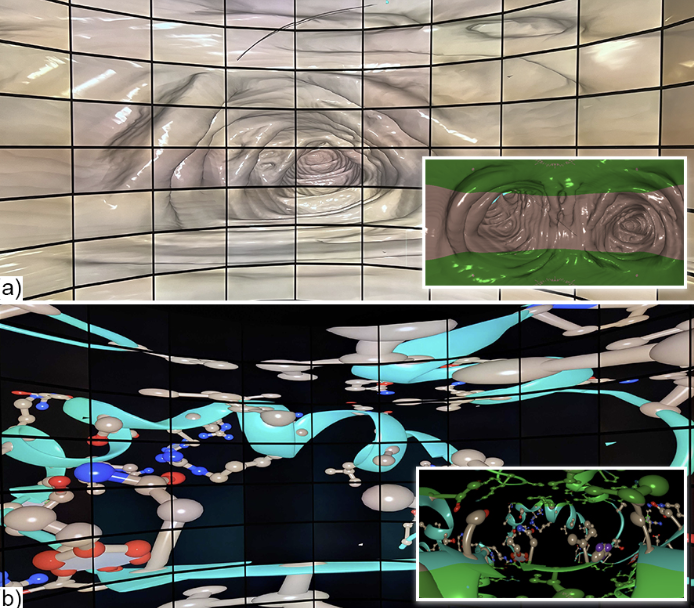
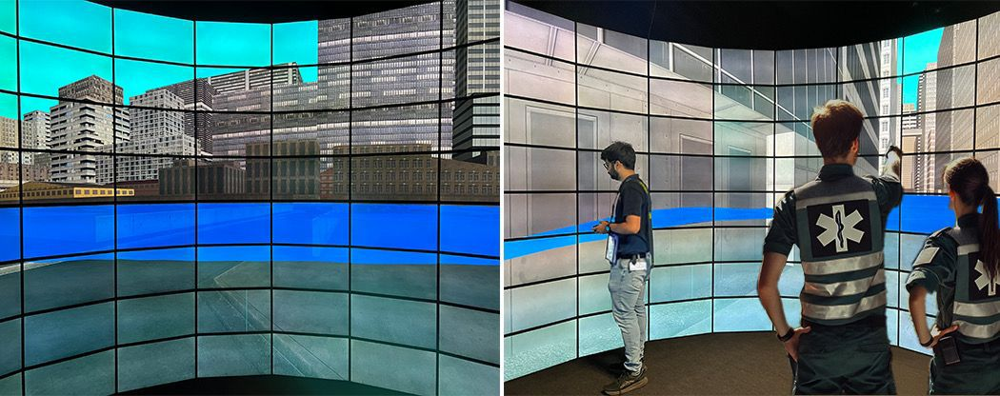
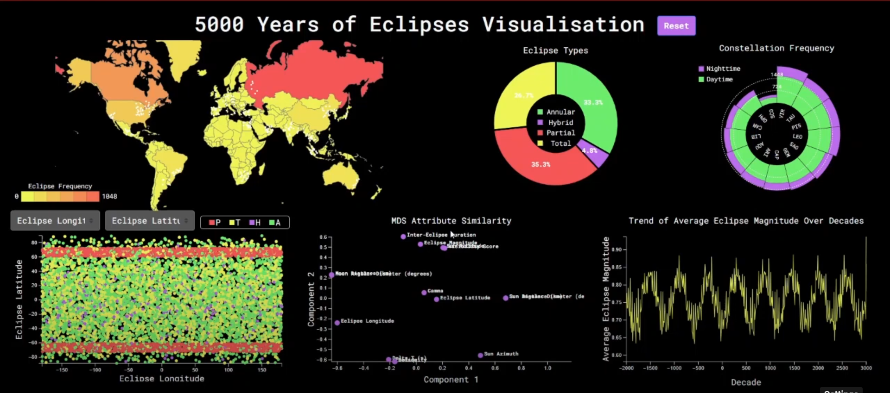

MSCS student at Stony Brook University, NY
Hello, World!
I'm Chahat Kalsi, a second-year Master's student in Computer Science at Stony Brook University, NY, US.
At the Center of Visual Computing (CVC), I work under Prof. Arie E. Kaufman and Saeed Boorboor, focusing on immersive systems like Silo, a cylindrical stereo display with 168 high-resolution panels. I helped develop SiloEngine, an OpenGL-based framework enabling seamless stereoscopic rendering and interaction. I also created a conformal mapping-based visualization pipeline to address missing floor and ceiling information, collaborating with Prof. Xianfeng Gu on conformal and optimal transport mappings. Currently, I am building a VTK-based volume rendering engine for Silo, with a D3.js iPad interface for real-time interaction.
As a Graduate Assistant at the Center of Excellence in Wireless and Information Technology (CEWIT), I contribute to a vegetation management project, designing advanced deep learning models for detecting vegetation encroachment near powerlines using drone imagery. My work includes developing distributed segmentation frameworks with architectures like U-Net, DeepLabV3+, and PSPNet, achieving state-of-the-art results, including an IoU of 0.70 on the TTPLA dataset.
Current interests:

Developed an OpenGL based algorithm to render scenes based on input conformal mappings. Deployed it to Silo to visualize its missing floor and ceiling gaps.

SiloEngine is an OpenGL framework custom made to be deployed to stereo large-scale immersive systems, featuring stereo or mono rendering modes, gamepad based interaction, and network synchronization using VRPN.
This VTK based volume rendering engine is meant to be deployed to large-scale immersive systems, and comes with an iPad deployable d3.js GUI to interact with the volume.

A D3.js dashboard for visualizing 5000 years worth of solar eclipses data from NASA. Includes Choropleth map, time series plots, stacked radial bar plots, MDS attributes similarity plots, among others.
Aug 2024 - Present
Sept 2024 - Present
Feb 2023 - Jun 2023
July 2022 - Sep 2022
July 2021 - March 2022